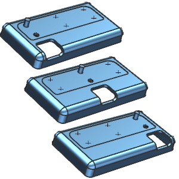

Estimated time to complete: 7–10 minutes
In this activity, you will create section lines, two sets of intersection points, two Isolate Object features. You will then create a boss and an extrusion located at the isolated features. Next you will edit the location of the isolate feature proximity plane.

Open the Create Isolate Object features activity.